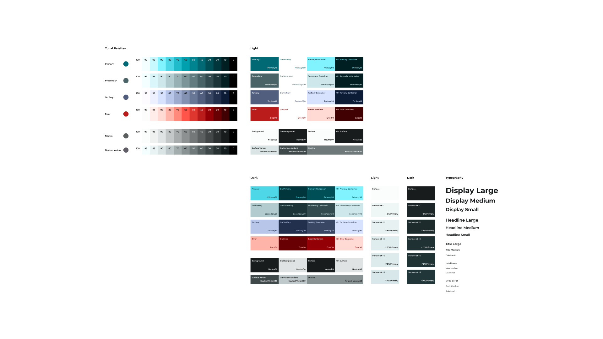
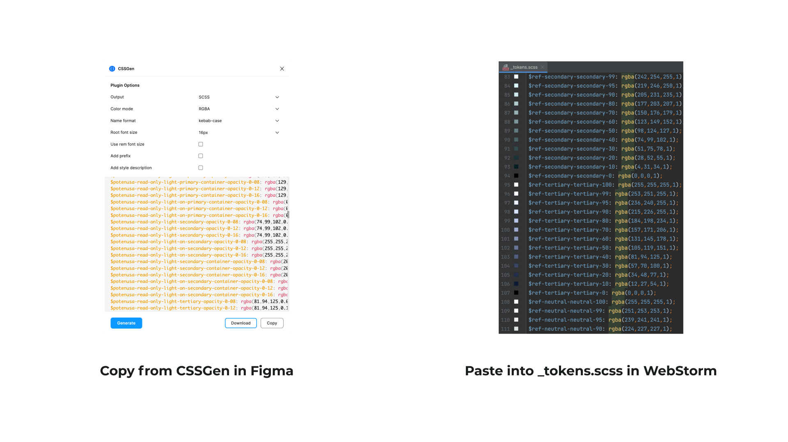

Background
There is a huge number of tools, such as Webflow, Wix or God Forbid WordPress that allow building websites almost effortlessly. However, I chose to stick with coding it myself. I’m not a developer, but I have always been interested in the tech that brings my designs to life.
The goal of the project was to build a simple but cool website where I would post the case studies of my design works. The development should be fast, and the costs should be minimal.
For the sake of simplicity, I decided to host the website as a GitHub Page. That also provided an easy way to showcase my still very humble coding abilities.
Visual Style
The beauty of a personal website is that it reflects your personality. It, surely, does have to serve visitors a pleasant experience, but the main person you have to satisfy is still you. You are the primary stakeholder of your personal website. That freedom in making the decisions unchains the inner experimenter.
The image I closely relate to is a ninja—a calm, laser-focused, and disciplined creature dressed in black garb that steadfastly performs his tasks. The fundamental mismatch, however, is that I only fight with inconvenient and uncreative design.
I avoided obviously picturing the ninja image using popular elements like shurikens but rather attempted to create the desired feeling with shapes. I used ninjatō-sharp lines and animated them to represent speed and agility.
Colors
As the scale of the current iteration of the website is simple, I decided not to spend time configuring the components in the design system. However, I still used the Material 3 system for colors. Their handy plugin allows quickly generating the color system based on the source values. Then using a different plugin, CSSGen, I composed the SCSS file with all color and typography tokens.
 Shapes
While experimenting with the site layout in Figma, I accidentally concocted the concept of using several thick lines instead of solid background color. I made a quick prototype of a button to test it.
I loved the idea.
- First, sharp overlayed shapes remind me of comic-style visual effects;
- Second, the idea seemed original. It reimagines the idea of a background that typically is just a filled rectangle;
- Third, I saw wide possibilities for animations. Stroke width can become fatter on scroll or hover. The position, scale, and other parameters of the comprising parts of shapes, such as lines, can also be manipulated.
Using the shapes as SVGs seemed to be the most convenient solution. It was easy to create them in Figma and copy-paste them into WebStorm. And more importantly, separate parts of the SVGs can be CSS-styled and JS-animated using classes. For example, we can assign the class=”line” to each line in the shape above and then manipulate its stroke width.
Implementation
To make the development faster, I decided to use the Bootstrap library. I had some experience with manually coding it, but his time, I wanted to test a different approach. I tried Bootstrap Studio, a tool that allows drag-and-dropping Bootstrap components and generates the code based on that. The development felt faster at the beginning, but then I bumped into a few pitfalls: not being able to add other media than images and not being able to add other JS libraries. As those things were critical for the project, I switched to manual coding.
In order to animate SVG shapes in the desired way, I needed an additional JS library. The first intention was to use p5.js as I had some experience with it. But then I discovered anime.js and decided to stick with it. Anime.js is a Javascript library that is meant for creating animations. With its help, I could easily manipulate SVG shapes.
Components
SVG shapes, consisting of randomly placed lines, are the basis of the potenusa.me visual style. The workflow of creating the shapes was as follows: construct the shape in Figma, copy it as SVG, paste it into the HTML, style it with CSS, and animate it with anime.js.
Buttons
The initial idea of the button animation was to shift the lines’ location from the center. After some experimentation, I ended up with a different approach. After the button has hovered, its lines get fatter, the scale of the lines and text increases, and a slight rotation applies to the shape.
Steady buttons were missing motion. In order to make the website more vibrant, I added floating animations.
CTA Section
The CTA section plays as a big button and has similar animation.
Hero Section
In the hero section, I attempted to craft a more interactive welcome experience. The image serves as the main component. I believe that it’s important to include a picture of yourself on the portfolio website as it immediately creates a friendlier experience, shows confidence, and invites visitors to have a dialogue.
Often, the less expected an experience is, the more impressive it is. It’s boring to witness a card trick you know how the outcome of. A first-time visitor isn’t aware of the SVG shape background concept. So, the hero section is a perfect place to introduce it by turning the background into a shape. It’s unexpected and thus has a chance to create an engaging experience. After some experimentation, I concocted the animation of a contour line scaling into a shape that works as a background.
I find the final animation satisfying and always scroll back and forth a few times when visiting the site. It still has some imperfections I didn’t manage to fix, such as the scaling to a too-small shape in the middle of the animation.
Learnings
Choosing to code the personal website myself was a good decision. After setting everything up, I ended up with a sandbox where I can try to implement the craziest design ideas of mine while learning more about web design and development. I’ve learned a few things already.
That project enhanced my SCSS managing skills. For example, I learned how to set up a workflow that merges SCSS partials into one CSS file with Gulp. That will make styling significantly easier in future projects.
Hosting on GitHub had big pluses. First, now I know a super-quick way to set up a website with GitHub Pages. Secondly, I learned how to push commits to a repository via the terminal.
I’ve gained more experience in Javascript and got closer to understanding how node_modules work. I believe that being able to operate with p5.js and anime.js libraries is a heavy-duty skill for a web designer, and I’m interested in continuing to master it.
The most unexpected learning of this project is that SVG is a powerful tool I previously neglected. The combination of vector graphics and Javascript can lead to truly impressive web experiences with fairly simple code.
Next Steps
I like how the website turned out, but it’s far from perfect. Here are my next steps.
The main itching point in the current iteration is that the HTML is needed to be updated by inserting each component and piece of text manually. The next significant improvement would be setting up a CMS. I’ve already tried to connect it to Contentful, but haven’t succeeded yet.
Another interesting challenge is creating SVGs. Copy-pasting them from Figma to HTML is slow and inconvenient. The solution I think of is to write a simple JS-based SVG engine that would generate shapes based on the dimension of the parent div and would allow to easily anime them.